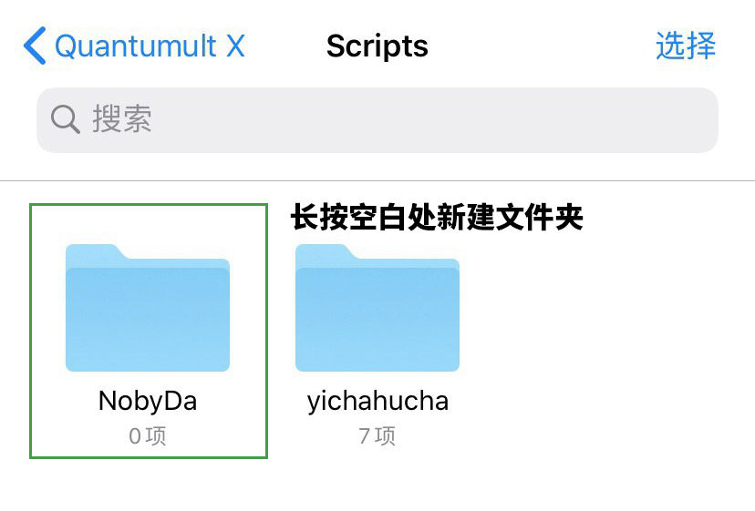

Working Copy, Git on iOS
本文隶属于 实用工具 / 科学上网 分类，点击分类名称可以查看更多相关文章；
主理人说
到底是引用远程JS脚本资源还是引用本地JS脚本资源，以实际情况为准。目前QuantumultX 1.0.5 即最新版本，仍然支持本地脚本引用，个人强烈建议通过大家使用 Working Copy 这个APP将 github上的Scrip仓库内容同步到本地，再配置QuantumultX的配置文件（QuantumultX-点击右下角三菱按钮-配置文件-编辑-[rewrite_local]）对脚本资源进行本地引用（且100%有效）。
*主理人优先推荐通过本地引用脚本资源（即本文第二种方法）对各种VIP进行解锁。
*更多大家超关心的实用教程在本文末尾附注部分，例如备份/抓包IPA，QuantumultX 进阶玩法等；
以上。
操作前必看
*以下教程中，QuantumultX 默认模式使用规则分流模式，请不要全部代理或全部直连模式；（进入QuantumultX，点击右下角三菱按钮-点击右上角/或底部的更多设置/...更多按钮-模式-选择规则分流）。
全文概要
本文分为两个部分，第一部分是远程引用脚本配置资源即JS.conf（QuantumultX-点击右下角三菱按钮--重写/Rewrite--引用--复制并粘贴--https://raw.githubusercontent.com/NobyDa/Script/master/QuantumultX/Js.conf，大家可以打开这个链接看看）；第二部分是使用Working Copy将github仓库内容同步下载到本地，并在QuantumultX配置文件中配置这些脚本资源以解锁各个App VIP资源，例如VSCO/Termius等（QuantumultX-点击右下角三菱按钮-配置文件-编辑-[rewrite_local]）。
...
https://raw.githubusercontent.com/NobyDa/Script/master/QuantumultX/Js.conf 远程配置内容示例
hostname = api.weibo.cn, mapi.weibo.com, *.uve.weibo.com, mp.weixin.qq.com, api.bilibili.com, app.bilibili.com, *.zhihu.com, aweme*.snssdk.com, *.kuwo.cn, ios.xiaoxiaoapps.com, api*.tiktokv.com, *.musical.ly, *.amemv.com, p.du.163.com, getuserinfo.321mh.com, getuserinfo-globalapi.zymk.cn, ios.fuliapps.com, vsco.co, api.vnision.com, *.my10api.com, sp.kaola.com, r.inews.qq.com, apple.fuliapps.com, newdrugs.dxy.cn, app101.avictown.cc, api.hlo.xyz, api.ijo.xyz, www.luqijianggushi.com, account.wps.cn, u.kanghuayun.com, api.gyrosco.pe, api1.dobenge.cn, api.mvmtv.com, mitaoapp.yeduapp.com, origin-prod-phoenix.jibjab.com, www.3ivf.com, pay.guoing.com, api.termius.com, api.bjxkhc.com, viva.v21xy.com, dida365.com, ticktick.com, biz.caiyunapp.com, api.gotokeep.com, ap*.intsig.net, mp.bybutter.com, api.vuevideo.net, api.picsart.c*, api.meiease.c*, splice.oracle.*.com, ios.xiangjiaoapps.com, apple.xiangjiaoapps.com, *.xiangxiangapps.com,
# tiktok封区解锁
(.*video_id=\w{32})(.*watermark=)(.*) url 302 $1
(?<=(carrier|account|sys)_region=)CN url 307 JP
# VSCO滤镜VIP
^https?:\/\/vsco\.co\/api\/subscriptions\/2.1\/user-subscriptions\/ url script-response-body https://raw.githubusercontent.com/NobyDa/Script/master/QuantumultX/File/vsco.js
...
第一部分 远程引用脚本的方法
QuantumultX 1.0.3 及之后版本（1.0.3之后版本或许不能远程引用脚本，1.0.3之后版本建议使用本地引用脚本资源，即本文第二部分；第一部分教程或不适用；），本地，远程引用脚本均可用，畅快解锁各种VIP会员（VSCO/无需拔卡看Tiktok/WPS/Terimius/Rewrite去广告/等等）；
教程概要
-1.针对Quantumult X app 1.0.3 - 之后版本（之后版本或许不能）；
0.本地，远程脚本均可用；
1.仓库新增加 unblockremote.js，以简化 QuantumultX 1.0.3 配置设备ID流程，最终使得 [rewrite_remote] 远程引用脚本配置文件可用：(https://raw.githubusercontent.com/NobyDa/Script/master/QuantumultX/Js.conf)；
2.unblockremote.js 脚本内容最开始是在联萌群看见，原作者暂无出处，欢迎提醒更正。
3.QuantumultX 1.0.3 亲测有效；
下面为详细步骤：
第一步 fork 本仓库
fork https://github.com/limbopro/Script ；
*如果是很久之前就已经 fork 了的小伙伴，且又不想学习 Github进行fork后如何与原（上游仓库）仓库同步？ ，或者 fork 了 https://github.com/NobyDa/Script ，请务必参考：https://github.com/limbopro/Script 该仓库的内容结构，在你 Fork 后的仓库下新建 unblockremote.js：

unblockremote.js 内容为：
var body = $response.body;
body = '\/*\[email protected] 你的QuantumultX设备ID填这里\n*\/\n' + body;
$done(body);第二步 修改 unblockremote.js
0.fork https://github.com/limbopro/Script；
1.进入 fork 后的仓库，找到并修改 unblockremote.js 脚本文件； 2.填写你的设备ID；（设备ID在哪？进入QuantumltX，点击右下角三菱按钮，点击右上角 ... 更多按钮，滑至底部关于，即可找到设备ID）；
var body = $response.body;
body = '\/*\[email protected] 你的QuantumultX设备ID填这里\n*\/\n' + body;
$done(body);第三步 使用WorkingCopy同步 fork 到本地
1.修改好 unblockremote.js 脚本文件后；
2.使用WorkingCopyApp 将 fork 后的仓库同步到 我的iPhone - Quantumult X - Scripts - NobyDa 下；
3.不会使用WorkingCopyApp? 可参考示例：本文后文 WorkingCopy的使用 部分（或网页内搜索：WorkingCopy的使用）；
第四步 配置 rewrite_local
编辑QuantumultX 配置文件（进入 Quantumult X App，点击右下角三菱按钮，找到配置文件模块，点击编辑） ，找到 [rewrite_local]，并在 [rewrite_local] 添加：
^https:\/\/(raw.githubusercontent|\w+\.github)\.(com|io)\/.*\.js$ url script-response-body NobyDa/unblockremote.js添加后效果：
[rewrite_local]
^https:\/\/(raw.githubusercontent|\w+\.github)\.(com|io)\/.*\.js$ url script-response-body NobyDa/unblockremote.js第五步 配置 hostname
编辑QuantumultX 配置文件（进入 Quantumult X App，点击右下角三菱按钮，找到配置文件模块，点击编辑），找到 hostname =，并在 hostname = 后面添加：raw.githubusercontent.com, *.github.io,
效果如下：
hostname = raw.githubusercontent.com, *.github.io, vsco.co, *.my10api.com, *googlevideo.com, api.termius.com, api*.tiktokv.com, api*.musical.ly, api*.amemv.com, aweme*.snssdk.com, api.weibo.cn, mapi.weibo.com, *.uve.weibo.com, mp.weixin.qq.com, api.bilibili.com, app.bilibili.com, *.zhihu.com, aweme*.snssdk.com, *.kuwo.cn, ios.xiaoxiaoapps.com, api*.tiktokv.com, *.musical.ly, *.amemv.com, mjappaz.yefu365.com, p.du.163.com, getuserinfo.321mh.com, getuserinfo-globalapi.zymk.cn, api-163.biliapi.net, ios.fuliapps.com, vsco.co, api.vnision.com, *.my10api.com, bd.4008109966.net, sp.kaola.com, r.inews.qq.com, apple.fuliapps.com, newdrugs.dxy.cn, bdapp.4008109966.net, app101.avictown.cc, api.hlo.xyz, api.ijo.xyz, www.luqijianggushi.com, account.wps.cn, u.kanghuayun.com, api.gyrosco.pe, api1.dobenge.cn, api.mvmtv.com, mitaoapp.yeduapp.com, origin-prod-phoenix.jibjab.com, www.3ivf.com, pay.guoing.com, p.doras.api.vcinema.cn, api.termius.com, mjappaz.yefu365.com, viva.v21xy.com, dida365.com, ticktick.com第六步 引用远程JS.conf
1.复制https://raw.githubusercontent.com/NobyDa/Script/master/QuantumultX/Js.conf链接， 2.进入Quantumult X，点击右下角三菱按钮，找到Rewrite模块-点击 引用，粘贴刚刚复制的链接；
以上。
如何确保脚本生效
最后，检查脚本是否生效；
检查模块开启
记得开启 Rewrite 模块， MitM模块；
检查引用远程/本地脚本的存在及命中情况
因为是引用远程/本地JS脚本最终都会调用 QuantumultX的Rewrite模块（利用正则对网址/网络请求进行重/改写）与 MitM模块（MITM是什么？中间人攻击）功能，以达到解锁App本地PRO/VIP的目的，所以可以通过检查QuantumultX的网络活动日志与Rewrite 规则，即可知JS脚本是否生效/命中；
举例
以VSCO.js举例，
其他脚本请看 https://raw.githubusercontent.com/limbopro/Script/master/QuantumultX/Js.conf ；
# VSCO滤镜VIP
^https?:\/\/vsco\.co\/api\/subscriptions\/2.1\/user-subscriptions\/ url script-response-body https://raw.githubusercontent.com/NobyDa/Script/master/QuantumultX/File/vsco.js第一步 检查 Rewrite 规则是否存在
1.打开QuantumultX，查看Rewrite 规则模块；
2.搜索相应 Rewrite 规则

3.如上，搜索VSCO，可以看到 VSCO Rewrite 规则 是存在的；
4.且是通过远程订阅JS.conf的方式（上图中黄色圆框标注）；
第二步 检查网络活动日志
1.打开VSCO APP，记住现在的时间节点；
2.打开QuantumultX，查看网络活动模块；
3.上图，VSCO.js完全命中，时间节点与打开VSCOApp 一只，还有一把小绿锁（MitM）；
以上。
下面是使用WorkingCopy同步Github仓库到本地的教程，以及如何引用本地脚本；
第二部分 引用本地脚本的方法
学好GitHub，基友一起走天下；
WorkingCopy的使用
0.已修正错误示例脚本资源路径；（ 19:00 30.10.2019 ）
1.不得不说，这个叫做Working Copy的APP值得上App story；如果你对Github一窍不通，可以看看这个帖子：GitHub 新手指南，从入门到放弃（5分钟教学，你也可以拥有自己的仓库）
2.如若阉割远程调用脚本（Scripts）的功能（意味着很多解锁都不能用了，例如VSCO VIP解锁 / 蜗牛读书VIP / Termius SSH 客户端解锁）， 但调用本地脚本（Scripts）依然可以；所以，现在我们将脚本资源通过Working Copy App 同步到本地名叫Scripts的文件夹中，只需调整一下Quantumult X App配置文件中对 脚本 的 引用地址 ，最后实现QuantumultX对本地脚本的引用（调用）；
*特指对 NobyDa 脚本资源的引用；
仓库repositories 即仓库集，大家口中所谓Repo即仓库；

via https://github.com/limbopro/Script
如上图，一个仓库的结构及功能介绍（Fork后，也是自己的库）；点击库所属用户名，你可看到他的所有公开仓库资源；
教程概要
将Github仓库的内容同步到手机（iOS；本文示例中指的仓库为https://github.com/limbopro/Script（ 我Fork https://github.com/NobyDa/Script 后得到的仓库），其他脚本作者的仓库请查看本文文末相关脚本仓库；
第一步 下载App及其设置
本教程需要用到两个App：Working Copy 以及 iOS 系统自带的 文件 App；
1.Working Copy 下载
https://apps.apple.com/us/app/working-copy-git-client/id896694807；
或app store 搜索Working Copy；
2.文件 App 设置

iPhone 找到进入文件 App，我的iPhone-Quantumult X-Scripts-长按空白处新建文件夹为NobyDa；
这一步可以参考视频（*视频前20秒）
第二步 同步 NobyDa 仓库到本地
fork https://github.com/NobyDa/Script.git
你们需登陆自己GitHub账号，去 Fork 一下这个仓库（ https://github.com/NobyDa/Script.git ），不会Fork？可以看看这个帖子：GitHub 新手指南，从入门到放弃（5分钟教学，你也可以拥有自己的仓库）；
把别人的仓库Fork到自己账户下，然后进入Fork 后的仓库，找到Clone and Download按钮，复制clone地址，到时候Woking Copy App 设置你的仓库远程地址需要使用到。(我Fork后，Clone 地址为，https://github.com/limbopro/Script.git，你fork后应该为https://github.com/你的用户名/Script.git)；
进入你fork后的仓库，如上图，复制红色箭头所指的链接；
设置并同步仓库到本地文件目录
0.打开 Working Copy App；
1.如上图，点击右上角+，选择Setup synced directory，设置同步目录；
2.如下图，届时会跳转到文件App，选择好目录；

3.其中被选择的目录，务必为空，即之前新建的NobyNa文件夹里面不应该有任何东西，在这个示例中NoByDa文件下有两个子文件，是需要删掉的（务必保持文件夹为空）；

查看并设置你的仓库远程地址

4.添加远程仓库地址；
5.粘贴远程仓库地址，右上角Save，再次进入，点击Fetch以拉取远程仓库资源；

6.出现错误提示Reference... not found，返回上层界面；
7.点击Branch，切换或选择远程仓库的分支，（*有Current branch 即当前选择的远程分支 与 Remote branchs 即供你选择的远程分支；）

8.选择好分支，并Checkout（切换）；
9.返回 NobyDa 目录文件夹，完美
使用WorkingCopyApp 将Github仓库内容同步到手机到此，已经结束；
以上。
APP小知识
1.iOS 自带app 文件中；

2.里面放了很多 其他App 的 文件，例如Quantumult X，而Quantumult X文件下又有三个子文件夹Images/Profiles/Scripts，它们分别是用来放策略图标，预配置文件以及脚本，以供Quantumult XApp 配置文件引用；
3.Working Copy主界面（Repositories页面），下拉就是 Fetch 的意思，所有已配置的仓库都将得到更新（拉取远程仓库资源到本地）；
*现在Scripts文件夹下已经同步好脚本了，该子文件夹名字为NobyDa（记住这一点，等下引用需要用到；）
第三步 QuantumultX 引用本地脚本
刚刚，我们已经使用WorkingCopyApp 将仓库内容同步到手机本地了，现在开始着手编辑QuantumultX的配置文件；
NobyDa JS 远程脚本地址https://raw.githubusercontent.com/limbopro/Script/master/QuantumultX/Js.conf *这个是 NobyDa JS 远程脚本地址（Quantumult X App 1.0.0 版本中可以直接在 Rewrite模块中引用）；
复制这个链接，到浏览器打开，里面有脚本资源的远程引用真实示例，等下需要把这些远程脚本资源引用转化为本地脚本资源引用；
[Rewrite_local]
在[Rewrite_local]下配置本地脚本资源
1.进入 Quantumult X App，点击右下角三菱按钮，找到配置文件模块；
2.点击编辑，找到[rewrite_local]（一般在 200行左右）；
3.这里就是放rewrite 规则的地方；
4.也是在这个位置进行本地/远程脚本资源的引用；
远程脚本资源引用示例
*Quantumult X App 1.0.2 版本更新中已限制该远程调用脚本的方法；
[rewrite_local]
#VSCO滤镜VIP
^https?:\/\/vsco\.co\/api\/subscriptions\/2.1\/user-subscriptions\/ url script-response-body https://raw.githubusercontent.com/limbopro/Script/master/QuantumultX/File/vsco.js将远程脚本引用转化为本地脚本资源引用
[rewrite_local]
#VSCO滤镜VIP
^https?:\/\/vsco\.co\/api\/subscriptions\/2.1\/user-subscriptions\/ url script-response-body NobyDa/QuantumultX/File/vsco.js发现区别了吗？远程脚本资源引用转化为本地后，url script-response-body 后面的地址，如https://raw.githubusercontent.com/limbopro/Script/master/QuantumultX/File/vsco.js变成了NobyDa/QuantumultX/File/vsco.js，而NobyDa/QuantumultX/File/vsco.js正是vsco.js脚本在文件App中Scripts文件夹下所对应的路径（理解本地脚本资源的引用路径，本文的重点知识；你可以打开文件App查看一一比对，或修正配置文件中的引用；）；
最终效果如下图示例

hostname 配置
0.复制并在浏览器打开https://raw.githubusercontent.com/limbopro/Script/master/QuantumultX/Js.conf，找到hostname =，hostname = 后的域名，复制它们；
1.进入 Quantumult X App，点击右下角三菱按钮，找到配置文件模块；
2.点击编辑，找到hostname =并在hostname =在后面粘贴；（一般在 200行左右）；
效果

Quantumult X 配置文件中引用本地脚本到此结束；
第四步 开玩
最后，进入 Quantumult X App，点击右下角三菱按钮，找到Rewrite模块，开启按钮，MitM模块，开启按钮；
以上。
后话
31.10.2019 更新
部分成功解锁示例：参考这里。另，本教程几经修改，以确保QuantumultX App 中配置文件[rewrite_local]示例中对本地脚本资源引用逻辑的可靠性，不保证脚本资源本身的有效性与可持续性；
本教程所使用脚本资源，Fork自：NobyDa，再次感谢；如果你也想拥有自己的仓库，参照本文附注中，1。
相关脚本仓库
*如需引用其他脚本作者的库，可查看：https://raw.githubusercontent.com/limbopro/Script/master/QuantumultX/Js.conf ，里面进行了大量其他脚本作者仓库的引用，可在GitHub上搜索他们的用户名，Fork 后，用 Working Copy同步到本地，再修改QuantumultX中配置文件本地脚本资源的引用路径即可；
已知部分脚本作者仓库位置：（如果找不到或已删库，请把他们的名字换成limbopro，例如https://github.com/eHpo1/Surge换成https://github.com/limbopro/Surge；再进行Fork即可；）
NoByDa：https://github.com/NobyDa/Script 相关频道：https://t.me/NobyDa （脚本常更新）
eHpo1: https://github.com/eHpo1/Surge
yichahucha：https://github.com/yichahucha/surge
...
粉丝特别关注的FAQ
1.Github进行fork后如何与原（上游仓库）仓库同步？；
附注
-1.仅需三步，免费使用iMazing 轻松下载IPA （当前最新版本）/ 或安装IPA文件（或抓包旧版本IPA）
0.脚本仓库地址：https://github.com/limbopro/Script （Fork 自NobyDa）
1.GitHub 新手指南，从入门到放弃（5分钟教学，你也可以拥有自己的仓库）
2.QuantumultX 进阶教程：组策略&分流规则&自定义图标的进阶玩法
3.iOS 使用 Surge/Quantumult/Shadowrocket /QuantumultX 解锁 TikTok 区域限制（免拔卡）10.10.2019
4.Shadowrocket/Quantumult/Quantumult X/App Store平价代购
联系主理人
1.关注频道 https://t.me/limboprossr 不失联；
2.毒奶粉们（我管我的Fans）可联系 TG机器人 或发送 邮件获取帮助；
3.或点击本页面右下角的聊天按钮联系；
版权属于：毒奶
联系我们： https://limbopro.xyz/6.html
电报频道： https://t.me/limboprossr
推特账号： https://twitter.com/limboprossr
集美账号： https://www.instagram.com/limboprossr/
油管账号 ： http://bit.ly/2VJcz7o/
机场推荐： https://limbopro.xyz/865.html
上网必会： https://limbopro.xyz/archives/2910.html
广告屏蔽： https://limbopro.xyz/archives/adguard.html
实用工具： https://limbopro.xyz/category/tools/
网站优化： https://limbopro.xyz/category/Typecho/
美图欣赏： https://limbopro.xyz/category/instagram/
开车专栏： https://limbopro.xyz/category/NSFW/
网站镜像： https://limbopro.github.io本文链接：https://limbopro.xyz/archives/workingcopy.html
本文采用 CC BY-NC-SA 4.0 许可协议 ，转载和引用时请注意遵守协议！